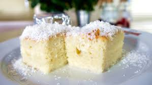

Bolo Gelado

Ingredientes
- 3 xicaras de farinha
- 2 xicaras de açúcar
- 4 ovos
- 1 copo americano de suco de laranja
- 1 colher de fermento em po
Modo de Preparo
- Em uma batedeira, bata as claras em neve acrescentado o acucar aos poucos e bata por 3 minutos.
- Adicione as gemas, o trigo, o suco e continue batendo até formar uma massa homogênea.
- Por último, adicione o fermento e bata por mais 40 segundos na menor velocidade da batedeira.
- Despeje a massa em uma forma média e untada
- Asse em forno preaquecido em temperatura média de 180 °C por 40 minutos ou até dourar.